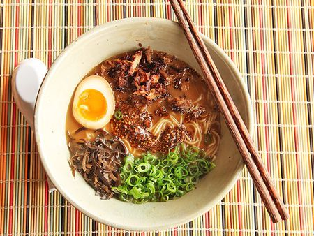

RAMEN

Description
Below you'll find step by step instructions on how to make a delicious
Japanese style ramen, with simple ingredients right from your home!
Don't forget to let us know how our recipe turned out for you!
Share a picture with us on Twitter or Instagram!
Ingredients:
- Pork Broth
- 1 egg
- Scallions
- Wheat Based Noodles
- Dried shiitake mushrooms
- Chili Oil
STEPS:
- Boil pork broth in deep pan to medium heat
- Once boil starts, add rest of ingredients except egg!
- continue to boil until noodles are cooked!
- boil egg separately in smaller pan
- Once egg is boiled, peel and cut in half
- Serve ramen with egg!